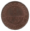
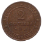
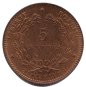
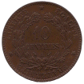
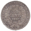
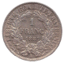
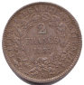
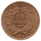
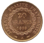

Proclamée le 4 septembre 1870 après la chute de Napoléon III, la IIIe République dure jusqu'en 1940. Sur le plan monétaire, le franc germinal reste la référence jusqu'aux bouleversements de la Première Guerre mondiale et de l'entre-deux-guerres.
Les types Cérès (déjà apparus sous la IIe République) puis la célèbre Semeuse d'Oscar Roty (à partir de 1897-1898) marquent profondément l'imagerie monétaire française. Les pièces d'or (20 francs Coq notamment), d'argent et de bronze circulent largement.
Cette longue période voit aussi l'apparition progressive de nouveaux alliages et la disparition de l'argent et de l'or de la circulation courante après 1914-1918. Elle s'achève avec la défaite de 1940 et l'État français.
Sources : infonumis.info · catalogues Le Franc & Gadoury
Les monnaies de la Troisième République

Revers1 Centime CERES
Date : 1896 A (Paris) ; 3.000.000 ex. (pour un total de fabrication de 23.807.950 ex. de 1872 à 1897)
Bronze ; 15 mm ; 1.00g (théorique 1g)
Circulation : jusqu'en 1940
Tranche lisse
Avers : RÉPUBLIQUE FRANÇAISE // * (millésime) * ; Tête de la République à gauche en Céres, déesse des moissons, portant un collier de perles, un double chignon et une couronne composite de blé, fleurs, olivier et olives, chêne et glands, nouée par un ruban descendant sur le cou et passant sur le front où il porte une inscription indistincte, le tout dans un grènetis.
Revers : LIBERTÉ * ÉGALITÉ * FRATERNITÉ * ; 1 / CENTIME en deux lignes dans le champ, au-dessus de la lettre d'atelier encadrée des différents ; le tout dans un grènetis.
Références : F.104 G.88

Revers2 Centimes CERES
Date : 1891 A (Paris) ; 300.000 ex. (pour un total de fabrication de 9.953.000 ex. de 1877 à 1897)
Bronze ; 20 mm ; 1.98g (théorique 2g)
Circulation : jusqu'en 1940
Tranche lisse
Avers : RÉPUBLIQUE FRANÇAISE // * (millésime) * ; Tête de la République à gauche en Céres, déesse des moissons, portant un collier de perles, un double chignon et une couronne composite de blé, fleurs, olivier et olives, chêne et glands, nouée par un ruban descendant sur le cou et passant sur le front où est inscrit le mot CONCOR ; sous la tranche du cou, le long du grènetis, OUDINE ; le tout dans un grènetis.
Revers : LIBERTÉ * ÉGALITÉ * FRATERNITÉ * ; 2 / CENTIMES en deux lignes dans le champ, au-dessus de la lettre d'atelier encadrée des différents ; le tout dans un grènetis.
Références : F.109 G.105

Revers5 Centimes CERES
Date : 1897 A (Paris) ; 12.600.000 ex. (pour un total de fabrication de 73.768.693 ex. de 1871 à 1898)
Bronze ; 25 mm ; 5.00g (théorique 5g)
Circulation : jusqu'en 1934
Tranche lisse
Avers : RÉPUBLIQUE FRANÇAISE // * (millésime) * ; Tête de la République à gauche en Céres, déesse des moissons, portant un collier de perles, un double chignon et une couronne composite de blé, fleurs, olivier et olives, chêne et glands, nouée par un ruban descendant sur le cou et passant sur le front où est inscrit le mot CONCOR ; sous la tranche du cou, le long du grènetis, OUDINÉ ; le tout dans un grènetis.
Revers : LIBERTÉ * ÉGALITÉ * FRATERNITÉ * ; 5 / CENTIMES en deux lignes dans le champ, au-dessus de la lettre d'atelier encadrée des différents, dans une couronne nouée par un ruban à sa base, formé à gauche d'une branche de laurier, à droite d'une branche d'olivier.
Références : F.118 G.157a

Revers10 Centimes CERES
Date : 1896 A (Paris) ; 4.447.261 ex. (pour un total de fabrication de 50.257.514 ex. de 1870 à 1898)
Bronze ; 30 mm ; 10.09g (théorique 10g)
Circulation : jusqu'en 1934
Tranche lisse
Avers : RÉPUBLIQUE FRANÇAISE // * (millésime) * ; Tête de la République à gauche en Céres, déesse des moissons, portant un collier de perles, un double chignon et une couronne composite de blé, fleurs, olivier et olives, chêne et glands, nouée par un ruban descendant sur le cou et passant sur le front où est inscrit le mot CONCOR ; sous la tranche du cou, le long du grènetis, OUDINÉ ; le tout dans un grènetis.
Revers : LIBERTÉ * ÉGALITÉ * FRATERNITÉ * ; 10 / CENTIMES en deux lignes dans le champ, au-dessus de la lettre d'atelier encadrée des différents, dans une couronne nouée par un ruban à sa base, formé à gauche d'une branche de laurier, à droite d'une branche d'olivier.
Références : F.135 G.265a

Revers50 Centimes CERES
Date : 1887 A (Paris) ; 1.865.694 ex. (pour un total de fabrication de 34.367.278 ex. de 1871 à 1895)
Argent 835 ‰ ; 18 mm ; 2.49g (théorique 2.5g)
Circulation : jusqu'en 1928
Tranche cannelée
Avers : REPUBLIQUE * FRANÇAISE ∙ ; Tête de la République à gauche en Cérès, déesse des moissons, portant un collier de perles, un double chignon et une couronne composite de blé, fleurs, olivier et olives, chêne et glands, nouée par un ruban descendant sur le cou et passant sur le front où est inscrit le mot CONCOR ; sous la tranche du cou le long du listel E. A. OUDINÉ. F.
Revers : (différent) (deux glands sur un branche) LIBERTE ∙ EGALITE ∙ FRATERNITE (différent) ; 50 / CENT. en deux lignes dans le champ, au-dessus du millésime, dans une couronne composite de deux branches de chêne et de deux de laurier, nouées deux par deux en bas par un ruban ; sous le noeud, la lettre d'atelier.
Références : F.189 G.419a

Revers1 Franc CERES
Date : 1887 A (Paris) ; 3.291.930 ex. (pour un total de fabrication de 33.554.892 ex. de 1871 à 1895)
Argent 835 ‰ ; 23 mm ; 5.00g (théorique 5g)
Circulation : jusqu'en 1928
Tranche cannelée
Avers : REPUBLIQUE * FRANÇAISE ∙ ; Tête de la République à gauche en Cérès, déesse des moissons, portant un collier de perles, un double chignon et une couronne composite de blé, fleurs, olivier et olives, chêne et glands, nouée par un ruban descendant sur le cou et passant sur le front où est inscrit le mot CONCOR ; sous la tranche du cou le long du listel E. A. OUDINÉ. F.
Revers : (différent) (deux glands sur un branche) LIBERTE ∙ EGALITE ∙ FRATERNITE (différent) ; 1 / FRANC en deux lignes dans le champ, au-dessus du millésime, dans une couronne composite de deux branches de chêne et de deux de laurier, nouées deux par deux en bas par un ruban ; sous le noeud, la lettre d'atelier.
Références : F.216 G.465a

Revers2 Francs CERES
Date : 1887 A (Paris) ; 2.342.903 ex. (pour un total de fabrication de 15.402.791 ex. de 1870 à 1895)
Argent 835 ‰ ; 27 mm ; 9.99g (théorique 10g)
Circulation : jusqu'en 1928
Tranche cannelée
Avers : REPUBLIQUE * FRANÇAISE ∙ ; Tête de la République à gauche en Cérès, déesse des moissons, portant un collier de perles, un double chignon et une couronne composite de blé, fleurs, olivier et olives, chêne et glands, nouée par un ruban descendant sur le cou et passant sur le front où est inscrit le mot CONCOR ; sous la tranche du cou le long du listel E. A. OUDINÉ. F.
Revers : (différent) (branche de chêne) LIBERTE ∙ EGALITE ∙ FRATERNITE ∙ (différent) ; 2 / FRANCS en deux lignes dans le champ, au-dessus du millésime, dans une couronne composite de deux branches de chêne et de deux de laurier, nouées deux par deux en bas par un ruban ; sous le noeud, la lettre d'atelier.
Références : F.265 G.530a

Revers10 Francs CERES, TROISIEME REPUBLIQUE
Date : 1899 A (Paris) ; 1.600.000 ex. (pour un total de fabrication de 2.400.000 ex. de 1895 à 1899)
Or 900 ‰ ; 19 mm ; 3.22g (théorique 3.2258g)
Circulation : jusqu'en 1928
Tranche cannelée
Avers : REPUBLIQUE FRANÇAISE ; Tête de Cérès couronnée d'épis et de feuilles de chêne portant glands, le tout pris dans le noeud de ses cheveux fixés en chignon bas et noués d'un ruban aux extrémités descendant derrière la nuque, un niveau en boucle d'oreille, portant un collier de petites perles, le tout entre un faisceau de licteur surmonté d'une main de Justice à gauche et d'une branche de laurier à droite, une étoile à six rais dans le champ la couronnant ; signé L. MERLEY. au-dessous le long du listel.
Revers : (différent) LIBERTE EGALITE FRATERNITE (différent) ; 10 / FRANCS en deux lignes dans le champ, dans une couronne d'une branche d'olivier à gauche et d'une branche de chêne à droite, nouées à leur base, la lettre d'atelier et millésime sous le noeud.
Références : F.508 G.1016

Revers20 Francs GENIE, TROISIEME REPUBLIQUE
Date : 1895 A (Paris) ; 5.293.347 ex. (pour un total de fabrication de 86.100.000 ex. de 1871 à 1898)
Or 900 ‰ ; 21 mm ; 6.44g (théorique 6.45161g)
Circulation : jusqu'en 1928
Tranche en relief : *****DIEU*PROTEGE*LA*FRANCE
Avers : RÉPUBLIQUE FRANÇAISE ; Génie ailé de la République debout à droite, tenant un stylet devant une table de Loi posée sur un cippe, accosté d'un faisceau surmonté d'une main de Justice à gauche et à droite d'un coq tourné à gauche ; signé Dupré en cursif à l'exergue.
Revers : LIBERTÉ ÉGALITÉ FRATERNITÉ ; 20 / FRANCS / (millésime) dans une couronne de chêne fermée et continue, lettre d'atelier sous la couronne entre les différents.
Références : F.533 G.1063